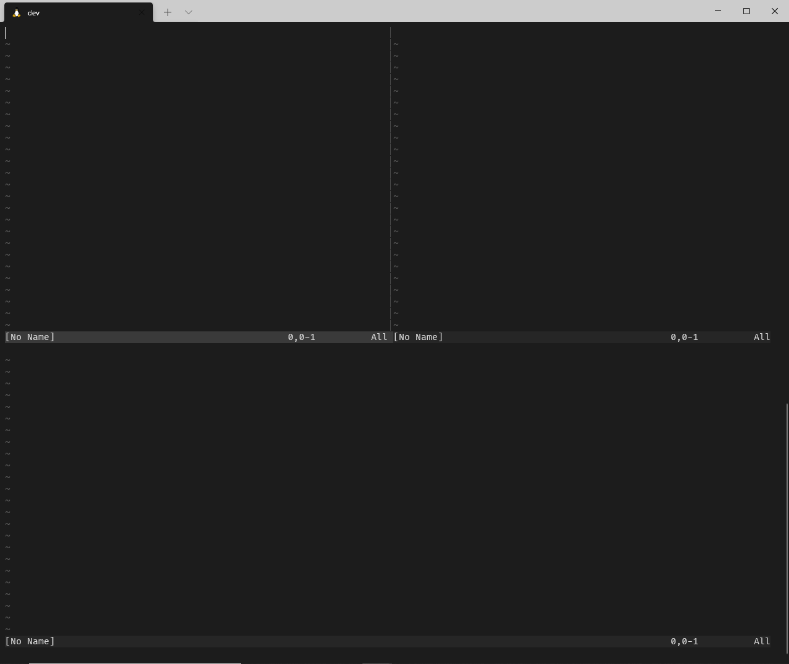
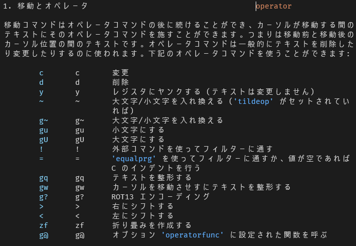

Vimが好きになる本 - gorilla0513 - BOOTH
出先で1時間ほど時間があったので積読していたゴリラさんが書かれた「Vimが好きになる本」を11章(全15章)まで読みました。
キリが良いので11章までで初めて知ったことなど色々気づきがあったので思ったベースで知識の定着も兼ねてアウトプットしようと思います。
残念ながら後編があるかはわかりません…
第3章 バッファとウィンドウとタブページ
-
Vimではファイルを開くと内容がメモリにロードされる。これがバッファ。
-
:lsもしくは:buffersでバッファを確認できる。%はカレントバッファ、#は直前に開いていたバッファを指す。

:new空のウィンドウを水平分割で開く:vnew空のウィンドウを垂直分割で開く- これは知っておくと地味に便利。

第5章 ノーマルモード
5章は筆者いわく一番読んで欲しい章とのことでしたが、かなり知らない情報があってとても勉強になりました。
忘れたころにまた読み返したいです。
-
モーションはカーソル移動のこと
-
f[文字]で右に向かって移動。;で順方向に繰り返す。,で逆方向に繰り返す。- 行内移動が楽になるから手癖にしたい。
■f[文字]での行内移動

-
オペレーターはyやdといった操作のコマンドのこと
- オペレーターはカウントとモーションを組み合わせることができる
-
大文字・小文字切り替えに使える便利なオペレーター
gu+モーションでモーションの範囲を小文字にするguw単語を小文字にする
gU+モーションでモーションの範囲を大文字にするgUw単語を大文字にする
これは知らなかったけどめちゃくちゃ便利！
■大文字・小文字切り替え
ちなみにオペレータは:help operatorとするとオペレータ一覧が出てくるのでオペレータってどれのことだろうか？と調べるときは便利！

-
テキストオブジェクトは、テキストを1つの意味のあるまとまりとして扱う
- オペレーター、もしくはビジュアルモードの後に使える。
- ヘルプは
:h objectで引ける
-
テキストオブジェクトで使えそうなもの
a"ダブルクォーテーションで囲まれた文字列(ダブルクォーテーションを含む)a'シングルクォーテーションで囲まれた文字列(シングルクォーテーションを含む)a(ora)()で囲まれた文字列(()を含む)a<ora><>で囲まれた文字列(<>を含む)a[ora][]で囲まれた文字列([]を含む)i"ダブルクォーテーションで囲まれた文字列(ダブルクォーテーションを含まない)i'シングルクォーテーションで囲まれた文字列(シングルクォーテーションを含まない)i(ori)()で囲まれた文字列(()を含まない)i<ori><>で囲まれた文字列(<>を含まない)i[ori][]で囲まれた文字列([]を含まない)
テキストオブジェクトをv(ビジュアルモード)と組み合わせるとすごい便利だったので紹介します。
■v + a(
()で囲まれた文字列(()を含む)を選択

■v + iw
単語(空白を含まない)を選択

■v + i(
()で囲まれた文字列を選択

■v + i'
''で囲まれた文字列を選択
■v + i<
<>で囲まれた文字列を選択
-
r[文字]でカーソルの文字を置換- これも地味ーに便利なやつ！
-
gJは空白を含まないで行連結
■gJで空白を含まないで行連結
第6章 挿入モード
-
レジスタはyやdなどのしたテキストが保存される領域
-
:regでどのレジスタに何が保存されているか確認できる。 -
Ctrl+r=に続けてexpand("%:p")とすると挿入モードでファイルのフルパス
■expression用レジスタでexpandの結果をプットする
これ知らなかったですが使いこなしたらすごそうです。
VimScriptで評価した結果が欲しい場合などに使えそうな予感。
第9章 置換モード
Shift+rで置換モードになり、文字を置換していくことができる。
第10章 Terminal-Jobモード
- Vimを終了することなく、ターミナルを使用できるのでちゃんと理解して使うととても便利そう。
第11章 ヘルプ
:helpgで正規表現であいまい検索は知らなかった:h help-summary、:h index、:h quickrefでヘルプを引くのは最初のほうはよさそう。
まとめ
最後らへんは結構使わない機能が多くてへえーこんな機能があるんだという感じで呼んでました。
とくにTerminal-Jobモードはちゃんと理解して使うとかなり開発体験変わりそうと思いました。
また、テキストオブジェクトはよくわからんとなっていて調べたこともなかったのでこの本を通して凄さが分かりました。
すぐに効果が出てくると思うのでテキストオブジェクトは意識しながら開発していきたいと思いました。